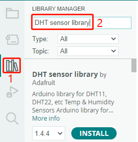
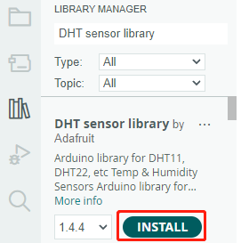
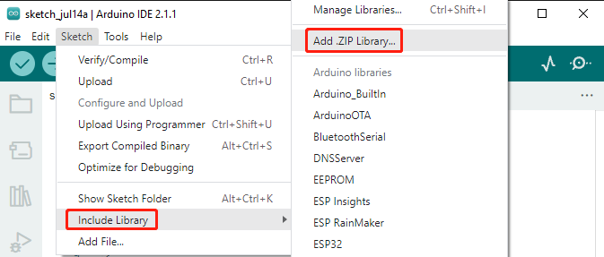
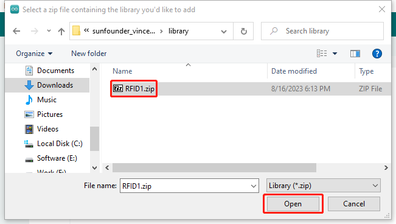
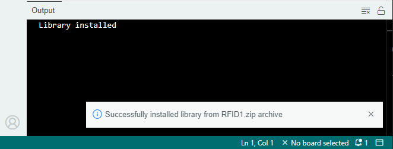
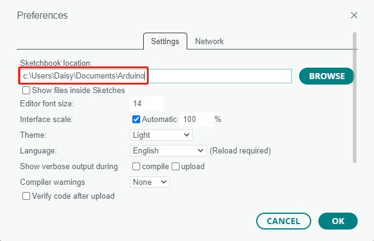

Note
Hello, welcome to the SunFounder Raspberry Pi & Arduino & ESP32 Enthusiasts Community on Facebook! Dive deeper into Raspberry Pi, Arduino, and ESP32 with fellow enthusiasts.
Why Join?
Expert Support: Solve post-sale issues and technical challenges with help from our community and team.
Learn & Share: Exchange tips and tutorials to enhance your skills.
Exclusive Previews: Get early access to new product announcements and sneak peeks.
Special Discounts: Enjoy exclusive discounts on our newest products.
Festive Promotions and Giveaways: Take part in giveaways and holiday promotions.
👉 Ready to explore and create with us? Click [here] and join today!
How to add libraries? (Important)
A library is a collection of pre-written code or functions that extend the capabilities of the Arduino IDE. Libraries provide ready-to-use code for various functionalities, allowing you to save time and effort in coding complex features.
Using the Library Manager
Many libraries are available directly through the Arduino Library Manager. You can access the Library Manager by following these steps:
In the Library Manager, you can search for the desired library by name or browse through different categories.
Note
In projects where library installation is required, there will be prompts indicating which libraries to install. Follow the instructions provided, such as “To install the library, use the Arduino Library Manager and search for “DHT sensor library” and install it.” Simply install the recommended libraries as prompted.

Once you find the library you want to install, click on it and then click the Install button.

The Arduino IDE will automatically download and install the library for you.
Manual Installation
Some libraries are not available through the Library Manager and need to be manually installed. To install these libraries, follow these steps:
Open the Arduino IDE and go to Sketch -> Include Library -> Add .ZIP Library.

Navigate to the directory where the library files are located and select the library file(.zip) and click Open.

Once the installation is complete, you will receive a notification confirming that the library has been successfully added to your Arduino IDE. The next time you need to use this library, you won’t need to repeat the installation process.

Repeat the same process to add other libraries.
Library Location
The libraries installed using either of the above methods can be found in the default library directory of the Arduino IDE, which is usually located at C:\Users\xxx\Documents\Arduino\libraries.
If your library directory is different, you can check it by going to File -> Preferences.

Reference